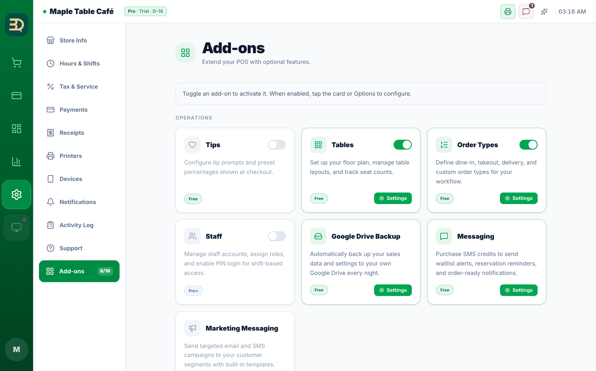
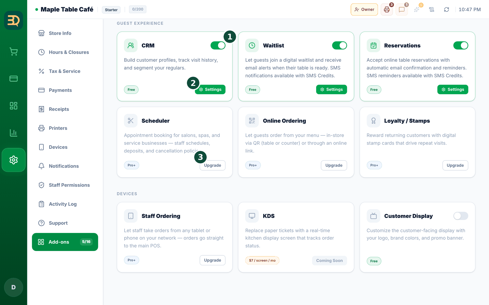

12附加功能与扩展
附加功能（Add-ons）是您可以开启或关闭的额外功能，它们都集中在同一个地方，您只需为使用的功能付费。
开启和关闭附加功能


- 打开
Settings › Add-ons。您会看到按 Operations（运营）、Guest Experience（顾客体验）和 Devices（设备）分组的卡片，每张卡片都有一个开/关开关（绿色表示开启）。 - 点击开关即可开启或关闭某项功能。Free 附加功能在所有套餐中都可用；部分功能（如在线点单/QR、会员积分、员工、排班）为 Pro；短信（SMS）按量付费。
- 有些附加功能需要先开启另一项。例如：在 Tables 关闭的情况下开启 Reservations，会弹出 “Reservations requires Tables”（预约需要桌台）的提示，点击 Enable Both（同时启用）即可。关闭其他附加功能所依赖的功能时，会显示 Disable All（全部禁用）。
- 设置侧边栏中 Add-ons 旁边有一个小计数器（“已开启数 / 16”），显示 16 个附加功能中已开启的数量。
- 使用短信（SMS）前，请先向余额中充值一些金额（见向顾客发送消息）。之后您只需为实际发送的短信付费。
按量付费指的是您按使用量付一点费用，而不是固定的月费。余额不足时再充值即可。
功能被锁定时
员工点到了被锁定的功能？他们可以当场请您处理。在网页端，点击被锁定的功能（员工点单、顾客显示屏、候位名单登记终端）时，系统会提供向您发送说明的选项，而不是让他们卡住："Want us to email the owner instructions for turning on Staff Ordering?"（需要我们把开启员工点单的说明发邮件给店主吗？）→ Send email（发送邮件）。您会在收件箱里收到说明，而他们可以继续忙手头的排队工作。每项功能每天只会发送一次，再次尝试会提示 "We already sent that email today — please check your inbox."（我们今天已发送过该邮件，请查看您的收件箱。）
在 iPad 或桌面应用上，您会看到一段简短说明，而不是邮件按钮（App Store 规则），请在网页上通过您的 BrewDesk 账户更改套餐。